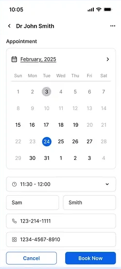

FEATURED INTERACTIVE PROTOTYPE · AI TRAVEL
AirScout
A flight agent that can search on your behalf while keeping its evidence, limits, and next action in view.
Open the interactive prototypeSENIOR PRODUCT DESIGNER · 7 YEARS
From small startups to large organizations, I bring PMs, engineers, developers, and CEOs into the same conversation to turn complex problems into clear, useful product experiences.
Start with the people, their context, and what is getting in their way.
See it in my work ↗A selection of product work shaped by curiosity, collaboration, and a healthy respect for the details.
A flight agent that can search on your behalf while keeping its evidence, limits, and next action in view.
Open the interactive prototypeA mobile-first business travel companion that keeps trip plans, preparation, and on-the-go help in one place.
Open the interactive prototypeAn AI-assisted project workspace that helps teams spot planning risks and choose a next step while keeping every change in their hands.
Open the interactive prototype
I’m Thien, a product manager and senior product designer based in Montréal. For the past seven years I’ve partnered with startups from the first product idea through research, flows, design systems, prototypes, and launch.
I like translating complex workflows into clear, human experiences, and bringing product, engineering, clinical, and marketing teams together to make them real. Outside product work, I speak Vietnamese, English, French, and Korean.
I pair AI tools like Codex, Claude, ChatGPT, and Cursor with Figma and Gleam to move from early ideas to polished, shippable experiences. They help me explore directions, synthesize research, prototype and iterate quickly, and stay close to implementation—so I can spend more time on product judgment, craft, and outcomes that matter to people.
From early-stage startups to healthcare SaaS, I work across discovery, product direction, and polished end-to-end experiences.
Healthcare SaaS · Product strategy, design, and delivery with Cursor and Gleam
Healthcare SaaS · Design systems, accessibility, AI workflows
Amusement park management SaaS · B2B and B2C
Consulting firm · Research and product design for Fortune 500 clients
Startup projects · SaaS, B2B/B2C, and design systems
Finding an appointment shouldn’t feel like another hurdle. Here’s a closer look at the booking flow.

I’d love to hear what you’re working on. Tell me a little about it and I’ll be in touch.